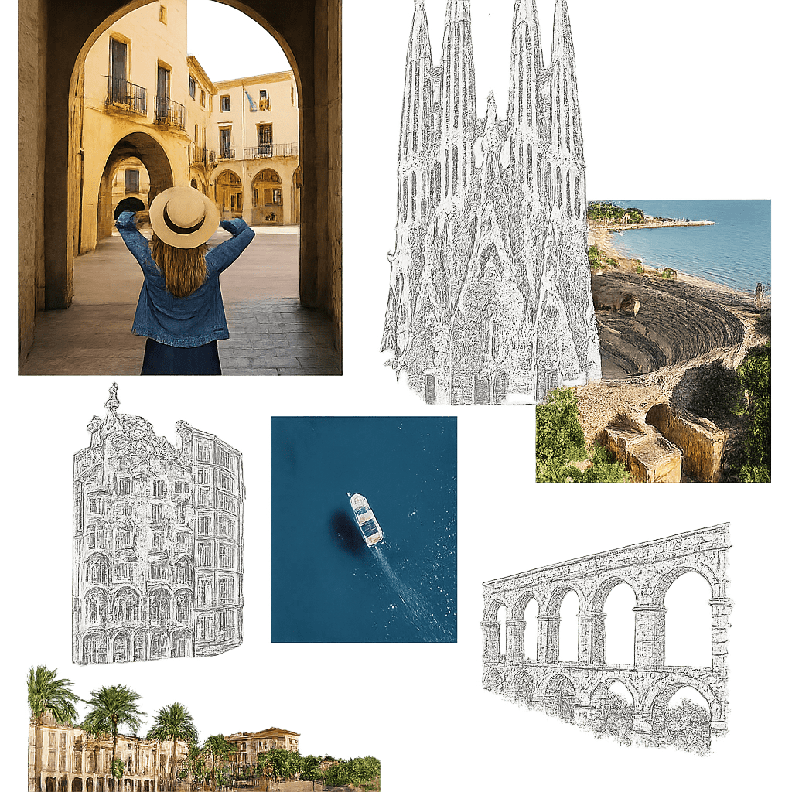

Venta de propiedades
Estrategia personalizada, fotografía profesional, tours virtuales y campañas en portales nacionales e internacionales para encontrar al comprador ideal.
Saber más
Más de dos décadas conectando propietarios con los compradores adecuados en Barcelona, Garraf, Penedés y toda Cataluña. Sin prisas, pero con precisión.
Alemany Real Estate nació en Barcelona con una misión clara: aportar transparencia, profesionalidad y estrategia al mercado inmobiliario. Fundada y dirigida por Ester García Alemany, la agencia combina más de 20 años de experiencia con las herramientas digitales más avanzadas.
Operamos desde la Costa Brava hasta Ibiza, desde Barcelona hasta la Costa del Sol, con una red colaborativa de más de 600 agencias a través de MLS Ágora y AICAT Garraf.
Acompañamiento integral en cada fase del proceso inmobiliario, con la dedicación que tu patrimonio merece.
Estrategia personalizada, fotografía profesional, tours virtuales y campañas en portales nacionales e internacionales para encontrar al comprador ideal.
Saber másAnálisis de cartera, optimización fiscal y estrategia de inversión para maximizar el rendimiento de tu patrimonio inmobiliario.
Saber másTasación rigurosa basada en datos de mercado, comparables reales y análisis de tendencias para posicionar tu propiedad con precisión.
Saber másEstrategias off-market para inversores extranjeros del norte de Europa, atraídos por el clima y la calidad de vida de Cataluña.
Saber másNuestra marca especializada en propiedades de alta gama en toda la provincia de Barcelona: chalets, áticos, masías y edificios singulares.
Saber másAcceso a más de 500 agentes en 33 provincias a través de MLS Ágora, multiplicando la visibilidad de cada propiedad en todo el territorio nacional.
Saber másVender una propiedad es un paso importante que merece tiempo, atención y estrategia.
Creemos en los procesos bien hechos. Cada propiedad recibe un plan a medida, porque no hay dos inmuebles iguales ni dos propietarios con las mismas necesidades.
Estudiamos el mercado, los comparables y las tendencias para establecer una valoración precisa y una estrategia de posicionamiento realista.
Fotografía profesional, tours virtuales, campañas en portales y redes sociales, y difusión a través de la red MLS Ágora con más de 500 agentes.
Negociación profesional, coordinación legal y fiscal, y acompañamiento hasta la firma en notaría. Comunicación transparente en cada paso.

Tanto si quieres vender, como si buscas asesoramiento sobre tu patrimonio inmobiliario, el primer paso es una conversación sin compromiso. Analizamos tu situación y te proponemos un plan a medida.
Servicio presencial en Barcelona y Tarragona, o 100% online para cualquier punto de España.
Operamos en toda la provincia de Barcelona, con especial presencia en Garraf, Penedés, Baix Llobregat y Barcelona ciudad. También trabajamos en Tarragona, Costa Brava, Ibiza y Costa del Sol a través de nuestra red colaborativa de más de 600 agencias.
Es nuestra filosofía de trabajo: creemos en los procesos bien hechos, sin prisas pero con precisión. Vender una propiedad es un paso importante que merece tiempo, atención y estrategia personalizada.
La primera consulta es gratuita y sin compromiso. Analizamos tu situación, tus objetivos y te proponemos una estrategia a medida, tanto presencial (Barcelona y Tarragona) como online para toda España.
MLS Ágora es la red empresarial MLS más activa de España, con más de 500 agentes en más de 33 provincias. Al pertenecer a esta red, tu propiedad tiene visibilidad ante cientos de agencias y sus compradores activos.
Sí. Una parte importante de nuestros compradores son clientes del norte de Europa atraídos por el clima, la calidad de vida y las oportunidades de inversión en Cataluña. Disponemos de estrategias off-market específicas para inversores extranjeros.
Puedes llamarnos o escribirnos por WhatsApp al 672 27 51 47, enviarnos un email a ester@alemanyrealestate.com o visitarnos en nuestra oficina de Vilanova i la Geltrú (Avda. Narcís Monturiol, 6 local derecha, 08800).
Estamos en Vilanova i la Geltrú, a pie de calle. Atendemos con cita previa para dedicarte todo el tiempo que necesites.